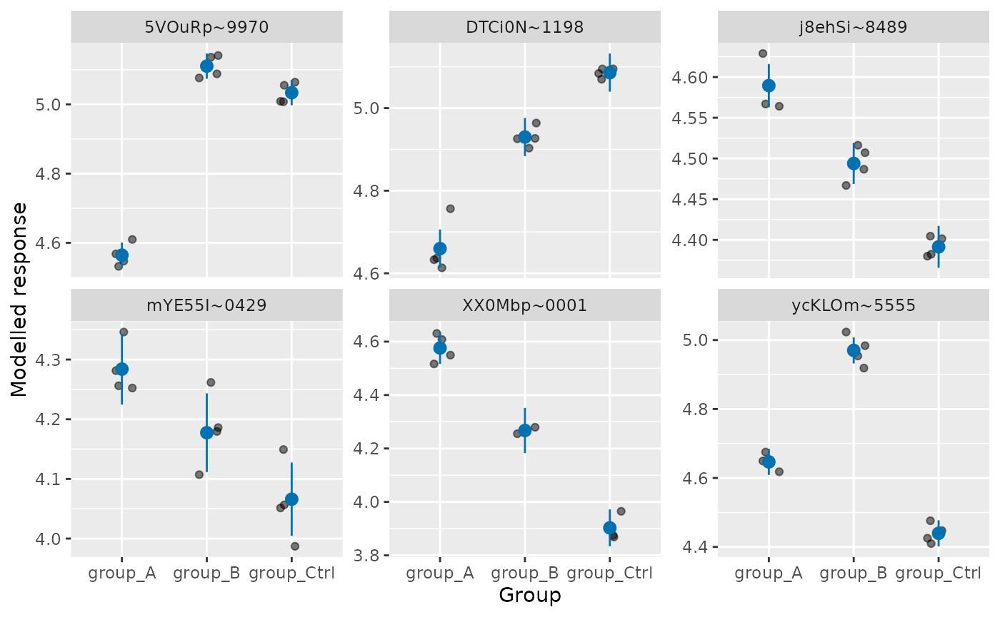
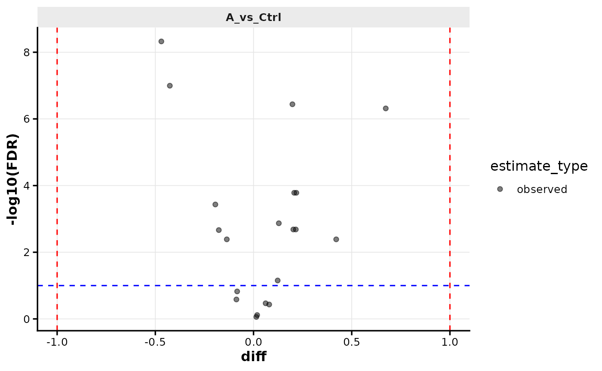

All modelling methods at a glance
Witold E. Wolski
Functional Genomics Center Zurich (FGCZ), ETH Zurich and University of ZurichSource:
vignettes/ModellingMethods.Rmd
ModellingMethods.RmdPurpose
build_contrast_analysis() selects the model with its
method argument. This vignette runs every method listed by
list_facades() on one small simulated dataset and shows one
line of output per method. Plots and a discussion of the methods are in
the article Comparing
modelling methods on one dataset.

build_contrast_analysis() is a factory: the method key selects the model, and every model rolls out with the same interface.
Data
We simulate peptide intensities for 20 proteins in three groups and
compare group A with the control.
library(prolfqua)
sim <- sim_lfq_data_peptide_config(Nprot = 20, seed = 42)
lfq_peptide <- LFQData$new(sim$data, sim$config)
lfq_peptide <- lfq_peptide$get_Transformer()$log2()$lfq
lfq_protein <- lfq_peptide$get_Aggregator()$aggregate()
lfq_limpa <- AggregateLimpa$new(lfq_peptide, "protein")$aggregate()
contrasts <- c(A_vs_Ctrl = "group_A - group_Ctrl")Each method declares the input it needs:
-
aggregated: protein-level input, herelfq_proteinaggregated with median polish.limpatakeslfq_limpa, aggregated byAggregateLimpa, which adds the per-protein standard errors it needs. -
nested: peptide-level input,lfq_peptide. The method models the peptides and reports protein-level contrasts.
Fit all methods
facades <- list_facades()
input_for <- function(method) {
if (method == "limpa") {
return(lfq_limpa)
}
if (facades[[method]]$needs == "nested") lfq_peptide else lfq_protein
}
model_for <- function(method) {
if (method == "lmer_nested") "~ group_ + (1 | peptide_Id) + (1 | sampleName)" else "~ group_"
}
results <- lapply(names(facades), function(method) {
fa <- build_contrast_analysis(input_for(method), model_for(method), contrasts, method = method)
fa$get_contrasts()
})
names(results) <- names(facades)One line per method
about <- c(
lm = "linear model per protein",
lm_impute = "lm; groups without observations imputed at the limit of detection (LOD)",
rlm = "robust linear model (MASS::rlm)",
rfit = "rank-based regression (Rfit)",
rfit_impute = "rfit with LOD imputation",
limma = "limma, empirical-Bayes moderated variances",
limma_impute = "limma with LOD imputation",
limma_voom = "limma with vooma precision weights",
limma_voom_impute = "limma_voom with LOD imputation",
deqms = "limma with DEqMS peptide-count variance moderation",
deqms_voom = "deqms with vooma precision weights",
limpa = "limma on limpa DPC-quantified proteins",
limpa_nested = "limpa, DPC quantification from peptides",
firth = "Firth logistic regression, protein detection",
binomial_nested = "quasibinomial model, peptide detection counts",
binomial_firth_nested = "binomial_nested with Firth bias reduction",
hurdle_nested = "lm_impute intensity + binomial_firth_nested detection",
lmer_nested = "mixed model, peptide and sample random effects",
ropeca_nested = "peptide fold changes summarised per protein (ROPECA)",
ropecaV2_nested = "ROPECA with an exact, correlation-aware null for the median peptide z-score"
)
overview <- data.frame(
method = names(results),
input = vapply(facades, function(x) x$needs, character(1)),
proteins = vapply(results, nrow, integer(1)),
FDR_lt_0.1 = vapply(results, function(x) sum(x$FDR < 0.1, na.rm = TRUE), integer(1)),
model = about[names(results)]
)
knitr::kable(overview, row.names = FALSE)| method | input | proteins | FDR_lt_0.1 | model |
|---|---|---|---|---|
| binomial_firth_nested | nested | 20 | 0 | binomial_nested with Firth bias reduction |
| binomial_nested | nested | 20 | 0 | quasibinomial model, peptide detection counts |
| deqms | aggregated | 20 | 14 | limma with DEqMS peptide-count variance moderation |
| deqms_voom | aggregated | 20 | 13 | deqms with vooma precision weights |
| firth | aggregated | 20 | 0 | Firth logistic regression, protein detection |
| hurdle_nested | nested | 20 | 14 | lm_impute intensity + binomial_firth_nested detection |
| limma | aggregated | 20 | 14 | limma, empirical-Bayes moderated variances |
| limma_impute | aggregated | 20 | 14 | limma with LOD imputation |
| limma_voom | aggregated | 20 | 14 | limma with vooma precision weights |
| limma_voom_impute | aggregated | 20 | 14 | limma_voom with LOD imputation |
| limpa | aggregated | 20 | 16 | limma on limpa DPC-quantified proteins |
| limpa_nested | nested | 20 | 16 | limpa, DPC quantification from peptides |
| lm | aggregated | 20 | 14 | linear model per protein |
| lm_impute | aggregated | 20 | 14 | lm; groups without observations imputed at the limit of detection (LOD) |
| lmer_nested | nested | 12 | 5 | mixed model, peptide and sample random effects |
| rfit | aggregated | 20 | 14 | rank-based regression (Rfit) |
| rfit_impute | aggregated | 20 | 14 | rfit with LOD imputation |
| rlm | aggregated | 20 | 14 | robust linear model (MASS::rlm) |
| ropeca_nested | nested | 20 | 14 | peptide fold changes summarised per protein (ROPECA) |
| ropecaV2_nested | nested | 20 | 16 | ROPECA with an exact, correlation-aware null for the median peptide z-score |
The detection models (firth,
binomial_nested, binomial_firth_nested) test
differences in how often a protein or its peptides are observed. The
simulated data has few missing values, so they find little.
Missing values
An NA intensity is a missing observation, and the method
decides what happens to it:
- dropped in each per-protein fit:
lm,rlm,rfit,limma,limma_voom,deqms,lmer_nested,ropeca_nested - imputed at the limit of detection where a whole group is missing:
the
_imputemethods - modelled as detection:
firth,binomial_nested,binomial_firth_nested, andhurdle_nestedtogether with the intensities - filled from the fitted models after the analysis:
impute_from_model()
The log2() transform turns zero intensities, which mean
“not detected”, into NA. Inf,
-Inf and NaN intensities, and NA
in protein, peptide, group or sample columns, stop the analysis with a
classed error.
What happened on the way is recorded: $provenance() of
the analysis lists the values set to NA, removed rows,
failed or singular fits, missing responses dropped per fit, and the
proteins absent from a contrast with the reason.
One protein, all methods
All methods return the same columns. Here is the protein with the
smallest lm p-value. For the detection models
diff is a log odds ratio, not a log2 fold change. This
protein is detected in every sample, so the detection models report
diff 0 and a p-value of 1 or NaN.
top <- results$lm$protein_Id[which.min(results$lm$p.value)]
one <- lapply(results, function(x) x[x$protein_Id == top, c("diff", "p.value", "FDR")])
one <- dplyr::bind_rows(one, .id = "method")
knitr::kable(one, digits = 3)| method | diff | p.value | FDR |
|---|---|---|---|
| binomial_firth_nested | 0.000 | 1.000 | 1.000 |
| binomial_nested | 0.000 | 1.000 | 1.000 |
| deqms | -0.469 | 0.000 | 0.000 |
| deqms_voom | -0.469 | 0.000 | 0.000 |
| firth | 0.000 | 1.000 | 1.000 |
| hurdle_nested | -0.469 | 0.000 | 0.000 |
| limma | -0.469 | 0.000 | 0.000 |
| limma_impute | -0.469 | 0.000 | 0.000 |
| limma_voom | -0.469 | 0.000 | 0.000 |
| limma_voom_impute | -0.469 | 0.000 | 0.000 |
| limpa | -0.272 | 0.000 | 0.000 |
| limpa_nested | -0.272 | 0.000 | 0.000 |
| lm | -0.469 | 0.000 | 0.000 |
| lm_impute | -0.469 | 0.000 | 0.000 |
| lmer_nested | -0.276 | 0.001 | 0.003 |
| rfit | -0.463 | 0.000 | 0.000 |
| rfit_impute | -0.463 | 0.000 | 0.000 |
| rlm | -0.469 | 0.000 | 0.000 |
| ropeca_nested | -0.495 | 0.000 | 0.000 |
| ropecaV2_nested | -0.495 | 0.000 | 0.000 |
Inspecting a fitted analysis
The fitted analysis supports standard R methods. print()
gives the model specification, fit counts, a one-line provenance summary
and a coefficient preview without calculating contrasts.
summary() evaluates the contrasts and counts estimated,
missing and significant results; the significance defaults are FDR <
0.05 and absolute effect > 1.
analysis <- build_contrast_analysis(lfq_protein, "~ group_", contrasts, method = "lm")
print(analysis)
#> prolfqua analysis: lm ( ContrastsLMFacade )
#> Formula: medpolish ~ group_
#> Contrasts: A_vs_Ctrl
#> Input subjects: 20
#> # A tibble: 1 × 6
#> subjects fitted failed singular imputed not_converged
#> <int> <int> <int> <int> <int> <int>
#> 1 20 20 0 0 0 0
#> Provenance: 0 failure and 1 other entries; see $provenance()
#> Coefficient preview:
#> # A tibble: 6 × 5
#> protein_Id term estimate std.error df
#> <chr> <chr> <dbl> <dbl> <dbl>
#> 1 0CubNR~5740 (Intercept) 4.67 0.0547 9
#> 2 0CubNR~5740 group_B -0.162 0.0756 9
#> 3 0CubNR~5740 group_Ctrl 0.0872 0.0741 9
#> 4 2kfAGV~3196 (Intercept) 4.65 0.0296 8
#> 5 2kfAGV~3196 group_B -0.21 0.0419 8
#> 6 2kfAGV~3196 group_Ctrl -0.215 0.0453 8
summary(analysis)
#> prolfqua analysis summary: lm
#> Formula: medpolish ~ group_
#> # A tibble: 1 × 6
#> subjects fitted failed singular imputed not_converged
#> <int> <int> <int> <int> <int> <int>
#> 1 20 20 0 0 0 0
#> # A tibble: 1 × 8
#> contrast estimated missing significant up down median_sigma median_df
#> <chr> <int> <int> <int> <int> <int> <dbl> <dbl>
#> 1 A_vs_Ctrl 20 0 0 0 0 0.0701 12.2
#> Provenance: 0 failure and 1 other entries; see $provenance()
analysis$provenance()
#> # A tibble: 1 × 8
#> source step event n ids reason failure response
#> <chr> <chr> <chr> <int> <lis> <chr> <lgl> <chr>
#> 1 model fit (Model) missing responses drop… 22 <chr> NA re… FALSE NA
head(coef(analysis))
#> # A tibble: 6 × 5
#> protein_Id term estimate std.error df
#> <chr> <chr> <dbl> <dbl> <dbl>
#> 1 0CubNR~5740 (Intercept) 4.67 0.0547 9
#> 2 0CubNR~5740 group_B -0.162 0.0756 9
#> 3 0CubNR~5740 group_Ctrl 0.0872 0.0741 9
#> 4 2kfAGV~3196 (Intercept) 4.65 0.0296 8
#> 5 2kfAGV~3196 group_B -0.210 0.0419 8
#> 6 2kfAGV~3196 group_Ctrl -0.215 0.0453 8
head(vcov(analysis))
#> # A tibble: 6 × 4
#> protein_Id term term2 covariance
#> <chr> <chr> <chr> <dbl>
#> 1 0CubNR~5740 (Intercept) (Intercept) 0.00299
#> 2 0CubNR~5740 group_B (Intercept) -0.00299
#> 3 0CubNR~5740 group_Ctrl (Intercept) -0.00299
#> 4 0CubNR~5740 (Intercept) group_B -0.00299
#> 5 0CubNR~5740 group_B group_B 0.00572
#> 6 0CubNR~5740 group_Ctrl group_B 0.00299
head(confint(analysis))
#> # A tibble: 6 × 7
#> protein_Id term estimate std.error df conf.low conf.high
#> <chr> <chr> <dbl> <dbl> <dbl> <dbl> <dbl>
#> 1 0CubNR~5740 (Intercept) 4.67 0.0547 9 4.55 4.80
#> 2 0CubNR~5740 group_B -0.162 0.0756 9 -0.333 0.00895
#> 3 0CubNR~5740 group_Ctrl 0.0872 0.0741 9 -0.0804 0.255
#> 4 2kfAGV~3196 (Intercept) 4.65 0.0296 8 4.59 4.72
#> 5 2kfAGV~3196 group_B -0.210 0.0419 8 -0.307 -0.113
#> 6 2kfAGV~3196 group_Ctrl -0.215 0.0453 8 -0.320 -0.111
formula(analysis)
#> medpolish ~ group_
#> <environment: 0x5a1dc2f36f98>
head(nobs(analysis))
#> # A tibble: 6 × 2
#> protein_Id nobs
#> <chr> <dbl>
#> 1 0CubNR~5740 12
#> 2 2kfAGV~3196 11
#> 3 2yQxtd~5011 12
#> 4 5VOuRp~9970 12
#> 5 DOwxjj~3330 12
#> 6 DTCi0N~1198 12
head(fitted(analysis))
#> # A tibble: 6 × 6
#> protein_Id sampleName group_ response fitted imputed
#> <chr> <chr> <chr> <dbl> <dbl> <lgl>
#> 1 0CubNR~5740 A_V1 A 4.84 4.67 FALSE
#> 2 0CubNR~5740 A_V2 A 4.65 4.67 FALSE
#> 3 0CubNR~5740 A_V3 A 4.49 4.67 FALSE
#> 4 0CubNR~5740 A_V4 A 4.81 4.67 FALSE
#> 5 0CubNR~5740 B_V1 B 4.58 4.51 FALSE
#> 6 0CubNR~5740 B_V2 B 4.60 4.51 FALSE
head(residuals(analysis))
#> # A tibble: 6 × 6
#> protein_Id sampleName group_ response residual imputed
#> <chr> <chr> <chr> <dbl> <dbl> <lgl>
#> 1 0CubNR~5740 A_V1 A 4.84 0.166 FALSE
#> 2 0CubNR~5740 A_V2 A 4.65 -0.0194 FALSE
#> 3 0CubNR~5740 A_V3 A 4.49 -0.182 FALSE
#> 4 0CubNR~5740 A_V4 A 4.81 0.136 FALSE
#> 5 0CubNR~5740 B_V1 B 4.58 0.0730 FALSE
#> 6 0CubNR~5740 B_V2 B 4.60 0.0915 FALSE
plot(analysis)
plot(analysis, type = "volcano")
Coefficient tables describe the fitted model; requested comparisons
remain available through analysis$get_contrasts().
Confidence intervals are Wald t intervals, with moderated standard
errors and degrees of freedom for limma and normal Wald intervals for
the Firth logistic backend. ROPECA coefficient tables are keyed by
protein and peptide because those methods fit peptide-level models.
vcov() returns the coefficient covariance as a long
table keyed by subject, term and term2.
LOD-refitted models use their borrowed covariance; matrix models use the
moderated variance and each subject’s weighted design. The default plot
shows observed responses and fitted group means with confidence
intervals for the six subjects with the smallest FDR in the first
contrast. Select other subjects with
plot(analysis, subject = top, level = 0.9). Points and
intervals share the modelled response scale; detection models show
probabilities, and mixed models use fixed-effect means with
Satterthwaite intervals. For multiple factors, the plotted means
correspond to factor combinations. ROPECA plots have one panel per
peptide of each selected protein. Volcano and MA plots remain available
through type = "volcano" and type = "ma";
combined hurdle analyses default to volcano and require selecting an
intensity or detection component for a fitted plot.
The modelling call retains its input, and the fitted-value and
residual accessors retain observed modelled responses. Internal
child-feature aggregation and detection encoding have no inverse.
Preceding LFQData transformations retain their original input columns;
they are not recorded as a new transformation-history object. See
?build_contrast_analysis for the affected methods and
output scales.
Fitted values and residuals retain sample, factor and available
child-feature identifiers. They include observed responses from
successful fits and a subject-level imputed flag; rows
filled during LOD imputation are excluded. The values use the fitting
scale: log2 intensity here, and probabilities for detection models.
Binomial detection responses are the adjusted proportions used in
fitting; response residuals equal response minus fitted probability.
nobs() excludes imputed observations.
Hurdle results combine two fitted models. Their print, summary and
plot methods describe the combined analysis; use
analysis$contrast$intensity or
analysis$contrast$detection for coefficients, formula,
observation counts, fitted values and residuals.
Session info
sessionInfo()
#> R version 4.6.2 (2026-10-29)
#> Platform: x86_64-pc-linux-gnu
#> Running under: Ubuntu 26.04.1 LTS
#>
#> Matrix products: default
#> BLAS: /usr/lib/x86_64-linux-gnu/openblas-pthread/libblas.so.3
#> LAPACK: /usr/lib/x86_64-linux-gnu/openblas-pthread/libopenblasp-r0.3.32.so; LAPACK version 3.12.0
#>
#> locale:
#> [1] LC_CTYPE=C.UTF-8 LC_NUMERIC=C LC_TIME=C.UTF-8
#> [4] LC_COLLATE=C.UTF-8 LC_MONETARY=C.UTF-8 LC_MESSAGES=C.UTF-8
#> [7] LC_PAPER=C.UTF-8 LC_NAME=C LC_ADDRESS=C
#> [10] LC_TELEPHONE=C LC_MEASUREMENT=C.UTF-8 LC_IDENTIFICATION=C
#>
#> time zone: UTC
#> tzcode source: system (glibc)
#>
#> attached base packages:
#> [1] stats graphics grDevices utils datasets methods base
#>
#> other attached packages:
#> [1] prolfqua_1.9.4 BiocStyle_2.40.0
#>
#> loaded via a namespace (and not attached):
#> [1] tidyselect_1.2.1 dplyr_1.2.1 farver_2.1.2
#> [4] S7_1.0.0 fastmap_1.2.0 rpart_4.1.27
#> [7] digest_0.6.39 lifecycle_1.0.5 Rfit_0.27.0
#> [10] survival_3.8-12 statmod_1.5.2 magrittr_2.0.5
#> [13] compiler_4.6.2 rlang_1.3.0 sass_0.4.10
#> [16] progress_1.2.3 tools_4.6.2 utf8_1.2.6
#> [19] yaml_2.3.12 data.table_1.18.6.1 limpa_1.4.2
#> [22] knitr_1.52 labeling_0.4.3 prettyunits_1.2.0
#> [25] htmlwidgets_1.6.4 RColorBrewer_1.1-3 numDeriv_2016.8-1.1
#> [28] withr_3.0.3 purrr_1.2.2 desc_1.4.3
#> [31] nnet_7.3-21 grid_4.6.2 jomo_2.7-6
#> [34] mice_3.19.0 ggplot2_4.0.4 scales_1.4.0
#> [37] iterators_1.0.14 MASS_7.3-66 cli_3.6.6
#> [40] rmarkdown_2.32 crayon_1.5.3 ragg_1.5.2
#> [43] reformulas_0.4.4 generics_0.1.4 otel_0.3.0
#> [46] minqa_1.2.8 cachem_1.1.0 stringr_1.6.0
#> [49] operator.tools_1.6.3.1 splines_4.6.2 BiocManager_1.30.27
#> [52] vctrs_0.7.3 boot_1.3-32 glmnet_5.2
#> [55] Matrix_1.7-6 jsonlite_2.0.0 bookdown_0.48
#> [58] hms_1.1.4 mitml_0.4-5 ggrepel_0.9.8
#> [61] systemfonts_1.3.3 foreach_1.5.2 limma_3.68.5
#> [64] tidyr_1.3.2 jquerylib_0.1.4 glue_1.8.1
#> [67] pkgdown_2.2.1 nloptr_2.2.1 pan_2.0
#> [70] codetools_0.2-20 stringi_1.8.9 gtable_0.3.6
#> [73] shape_1.4.6.1 lmerTest_3.2-1 lme4_2.1-0
#> [76] tibble_3.3.1 pillar_1.11.1 htmltools_0.5.9
#> [79] R6_2.6.1 textshaping_1.0.5 Rdpack_2.6.6
#> [82] formula.tools_1.7.1 evaluate_1.0.5 lattice_0.23-1
#> [85] rbibutils_2.4.1 backports_1.5.1 broom_1.0.13
#> [88] bslib_0.12.0 Rcpp_1.1.2 nlme_3.1-171
#> [91] mgcv_1.9-4 logistf_1.26.1 xfun_0.62
#> [94] fs_2.1.0 pkgconfig_2.0.3